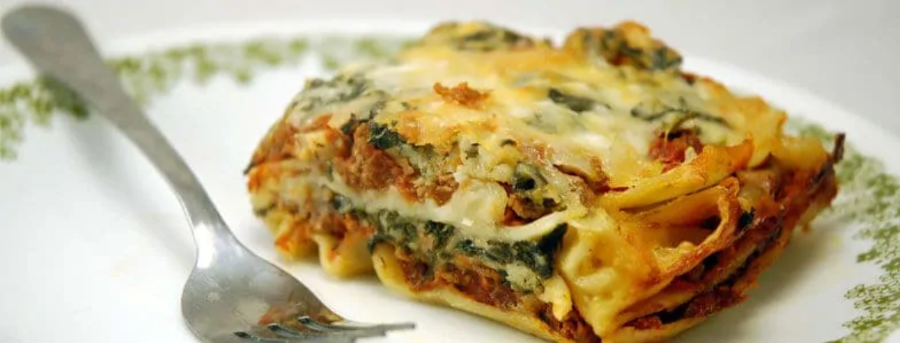

Nouvelle recette: les lasagnes végétariennes
recette:
4 oignons moyen
400 grammes de gruyère râpé
sel/poivre
basilic frais/herbes de Provence
4 courgettes
6 tomates fraîches (ou pelées en boîte)
200 g de coulis de tomate
50 cl de béchamel
Étape 1
Si vous utilisez des oignons, faites-les revenir (dans une sauteuse ou un wok) jusqu'à ce qu'ils soient fondants.
Étape 2
Coupez les tomates, ajoutez-les aux oignons, puis faites mijoter avec des herbes de Provence (n'hésitez pas !), sel et poivre.
Étape 3
Coupez les courgettes en rondelles puis incorporez-les au mélange.
Étape 4
Ajoutez de la sauce tomate (ou de la purée de tomate, à défaut), et 1 cuillère à café de sucre en poudre (plus en hiver, quand les tomates sont plus fades).
Étape 5
Laissez mijoter l'ensemble, 20 min environ, à feu moyen.
Étape 6
Une fois le mélange prêt, procédez à l'empilement dans un grand plat :
Étape 7
1 couche de lasagnes, 1 couche de préparation, 1 couche de béchamel, 1 couche de gruyère, et ainsi de suite (en rajoutant un peu de sel à chaque fois), en mettant beaucoup de gruyère sur la dernière couche.
Étape 8
Faites cuire à four chaud (thermostat 7-200°C), 35 minutes
Étape 9
Servez, lorsque c'est bien gratiné